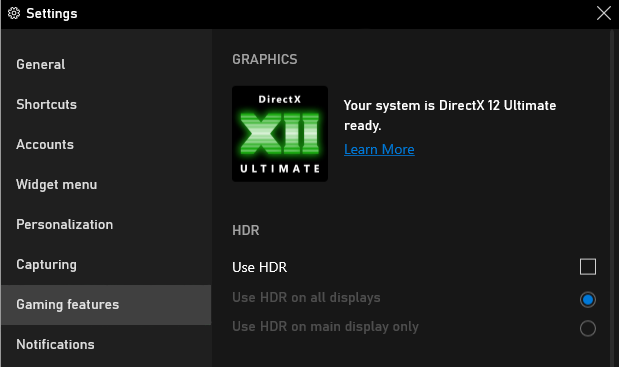
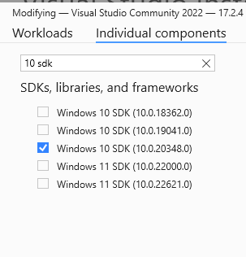
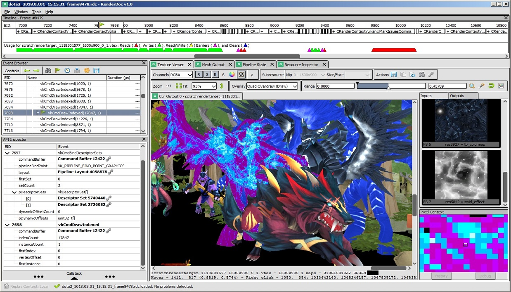
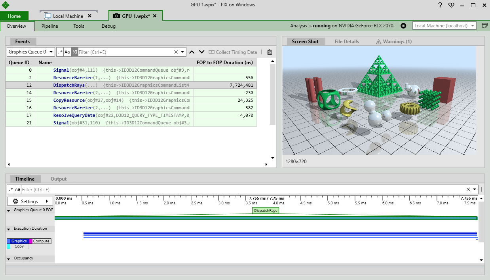

Introduction and Prerequisites#
1 - Introduction#
New graphics APIs, like DirectX 12 and Vulkan, have a reputation for being difficult to learn for beginners. The main reason is that modern APIs hide less to the programmer than the old ones (DirectX 11 and OpenGL) so you just end up studying low-level details even to draw a single triangle. However, learning DirectX 12 also has some advantages as it designed to make full use of multi-threading, and to get a finer control on resource management and CPU/GPU synchronization. Thanks to a better support for multi-threading, the CPU workload is more evenly distributed across all cores. Also, if you understand the use and re-use of resources, then you can take advantage of that by minimizing uploading and copying. That way you can free up CPU time to increase the number of draw calls (and consequently the GPU workload) to enhance performance of your graphics applications.
Note
The graphical capabilities provided by a specific GPU at the hardware level remain the same, regardless of the API used to develop graphics applications that can leverage those capabilities. In particular, using DirectX 12 instead of DirectX 11/10 to implement the same rendering techniques might not necessarily result in a performance boost simply because you’re using the latest version of the graphics API. However, as mentioned earlier, using DirectX 12 offers greater control over many aspects that, if properly used, can lead to performance improvements.
Currently, you have three ways to learn DirectX 12 from scratch, each with its pros and cons:
Frank Luna’s book: Introduction to 3D Game Programming with DirectX 12
\(\color{#44FFAA}\text{The Good}\): It provides a comprehensive explanation of both theory and practice. It can also serve as both an API reference and a computer graphics textbook, especially for beginners.
\(\color{#FF6666}\text{The Bad}\): Being a book, it omits some crucial low-level details to reduce cost and size. Additionally, it may be considered somewhat dated
Online tutorials (included YouTube videos)
\(\color{#44FFAA}\text{The Good}\): Free and easy to follow.
\(\color{#FF6666}\text{The Bad}\): Often, these tutorials focus mainly on the API, neglecting mathematical and theoretical aspects or providing equations without sufficient explanation.
Official repositories and documentation
\(\color{#44FFAA}\text{The Good}\): All the source code and level of detail you need, for free.
\(\color{#FF6666}\text{The Bad}\): The documentation is written as a reference for graphics programmers. That is, it assumes you have basic knowledge of computer graphics, GPU architectures, and system programming.
Actually, nothing prevents you from learning DirectX 12 by only taking the good parts of each resource, as long as you’re motivated enough to jump from one math textbook to another and read through dozens of documentation pages and tutorials to gather all the information you need on each topic.
My goal is to write a new, updated series of tutorials delves deeply into both theory (mathematics, computer graphics, rendering techniques) and practice (API and source code). The key to accomplishing this effectively is to prevent readers from becoming bored, intimidated, or discouraged by the extensive amount of information required to master graphics application development. Typically, when people start studying computer graphics, they want to see something on their screen as a gratifying reward. For this reason, in every tutorial, I will review a different sample and only explain the theory needed to implement it. This way, the reader feels like they’re studying to understand the implementation of a specific sample. This allows for a gradual and progressive acquisition of new information, building knowledge like a puzzle — each tutorial adds another piece.
I’m not suggesting that this will be the ultimate resource for learning DirectX. In fact, the official Microsoft documentation (see [1] and [2] in the reference list at the end of this tutorial) will always be the most important and fundamental resource to refer to during your studies. Here, I will simply try to provide as many details as possible to minimize the number of resources you need to consult.
Regarding the code samples, instead of reinventing the wheel, we can use the source code already available and maintained by Microsoft in their repositories. However, when necessary, I will also write custom samples based on the same framework and coding style.
The additional samples provided for this tutorial series are hosted on the following Github repository:
Below, are the Github repositories used as a reference:
microsoft/DirectX-Graphics-Samples
microsoft/Xbox-ATG-Samples
microsoft/Xbox-GDK-Samples
walbourn (Chuck Walbourn)
In conclusion, if you are looking for a comprehensive, updated resource to learn how to program with DirectX 12 from scratch, then give this tutorial series a chance.
2 - Prerequisites#
2.1 - Background knowledge#
Of course, I can’t explain everything, so having basic math skills is essential to completely understand the content of the tutorials and the techniques used in the related samples. Fortunately, knowledge of college-level math, including algebra, trigonometry, and calculus, covers about 90% of the math used throughout this tutorial series. For the remaining 10%, I will provide dedicated math appendices.
If your math skills are a bit rusty, don’t worry! You can consider [3] as an brilliant math review that starts from the basics and is accessible to everyone. Additionally, I recommend [4] (for self-study) or [5] (for formal education) as excellent references for more advanced topics. Additional textbook recommendations will be provided at the appropriate time.
If you need an introductory textbook on C++ you can take a look at [6] and [7], then use [8] as a reference, and [9] to really understand the low-level details.
2.2 - Hardware#
Obviously, you need a DirectX 12-capable graphics card if you want to run the samples examined in this tutorial series. In particular, a GPU that fully supports DirectX 12 Ultimate is required to execute some of the demos and compile the related source code. To check if your system meets these requirements, press Win + G to open the Xbox Game Bar and select Gaming features from Settings.

If your graphics card supports DirectX 12 Ultimate, then you should see something like the above image. Otherwise, it’s time to upgrade your PC with a new graphics card.
2.3 - Software#
The complete set of DirectX 12 Ultimate features is available starting from Windows 10, version 2004, so you need to upgrade your OS to at least this version if necessary.
Visual Studio is required to open the projects and compile the samples presented in this tutorial series. Additionally, you might require Visual Studio to create your own DirectX applications, unless you prefer to use your IDE of choice. However, ensure that you have installed the latest Windows 10 SDK (version 10.0.19041.0 or higher) and have updated your graphics card drivers to the latest version.

You will also need a graphics debugger: I recommend to install PIX on Windows and\or RenderDoc.
RenderDoc |
Pix on Windows |
|---|---|
 |
 |
References#
[1] DirectX graphics and gaming (microsoft.com)
[2] DirectX-Specs (microsoft.github.io)
[3] Engineering Mathematics (Stroud, Booth)
[4] Advanced Engineering Mathematics (Stroud, Booth)
[5] Advanced Engineering Mathematics (Kreyszig)
[6] Beginning C++ Through Game Programming (Dawson)
[7] A Tour of C++ (Stroustrup)
[8] The C++ Programming Language (Stroustrup)
[9] Write Great Code - Vol. 1 and 2 (Randall Hyde)